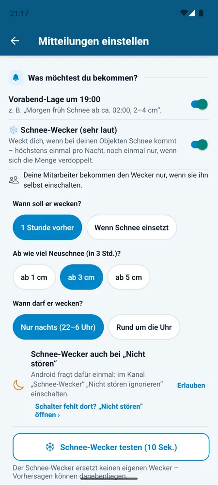
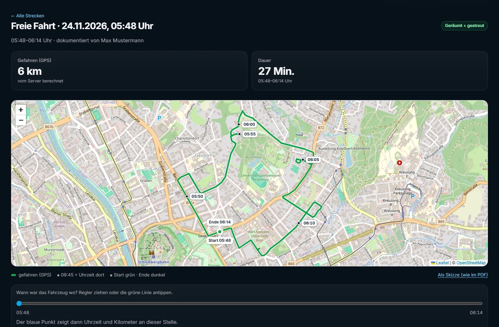
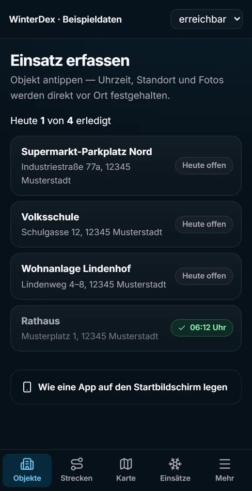

Winterdienst dokumentieren, noch während du räumst.
Jeden Räum- und Streueinsatz in rund 30 Sekunden festhalten — mit GPS, Wetterlage, Fotos und PDF-Nachweis. Für Hausbetreuung, Hausmeisterservice, GaLaBau, Hausverwaltung, Bauhof und Gemeinde.
Geräumt, gestreut oder nur kontrolliert: WinterDex hält jeden Einsatz fest — auch ganze Räumtouren mit Schneeschild oder Streuwagen.
Ort, Zeit und Wetter automatischGPS-Stempel, Uhrzeit und Wetterlage kommen von selbst dazu, Beweisfotos mit einem Tipp.
Gehwege und Straßen per GPSStrecke abfahren: Die Karte zeigt grün, was gefahren ist, und rot, was fehlt. Läuft auch im Funkloch.
Nachträglich nicht änderbarEinträge lassen sich weder bearbeiten noch löschen. Storno nur mit Begründung.
PDF-Nachweis und Glätte-FrühwarnungPDF je Objekt, Strecke, Monat oder Saison. Mit Pro meldet sich die Frühwarnung am Vorabend und früh, wenn bei deinen Objekten Glätte droht.
Ein Wintereinsatz mit WinterDex
Von der Glätte-Warnung bis zum Nachweis
So begleitet dich die App im Winterdienst: vom Hinweis am Vorabend bis zum fertigen PDF. Die neuen Wetter-Funktionen siehst du gleich darunter als echte Bildschirmfotos.
Heute in der App Vereinfachte Darstellungen mit Beispieldaten, keine Bildschirmfotos
−2 °CBeispiel-Wetterlage
WinterDex · 19:00Vorabend-LageMorgen früh Glätte möglich bei 2 Objekten
WinterDex · 02:45Glätte-FrühwarnungHeute Glätte möglich bei 2 Objekten
19:00 Am Vorabend Pro
Glätte-Warnung aufs Handy
Droht bei deinen Objekten Glätte, meldet sich WinterDex am Vorabend um 19 Uhr und früh um 2:45 Uhr (Uhrzeit einstellbar). Den Kontrollgang ersetzt das nicht.
HeuteGlätte jetzt
noch 2 von 3 betroffenen offen
Wohnanlage Sonnenhof
❄ GlätteOffen
Praxis Dr. Berger
❄ GlätteOffen
Kita Regenbogen
✓ 05:02 · Du
05:15 Früh am Morgen
Wo heute Glätte droht
In der Objektliste siehst du, welche Objekte heute von Glätte betroffen und noch offen sind. Das sieht jeder, auch ohne Pro.
Fahr deine Objekte der Reihe nach ab, die Navigation zum nächsten Ziel öffnet sich von selbst. Was ein Kollege heute schon erledigt hat, fällt heraus.
Wohnanlage SonnenhofEinsatz dokumentieren
Geräumt + gestreutSplitt
06:42GPS ±4 m
Einsatz speichernEinsatz gesichert
Wetter dazu: −3 °C, Schneefall
06:42 Vor Ort
Einsatz in Sekunden
Maßnahme wählen, speichern, fertig: GPS, Uhrzeit und Wetterlage kommen von selbst dazu, das Foto mit einem Tipp. Kein Netz? Der Einsatz wird später übertragen.
07:02–07:07Hauptstraße
07:07–07:11Kirchgasse
07:11–07:15Schulweg
07:02 Räumfahrt
Straßen und Gehwege per GPS
Fahr deine Strecke ab, die App zeichnet mit. Im Bericht siehst du die Spur auf einer Straßenkarte, mit Uhrzeiten entlang der Fahrt. Den Straßenverlauf ergänzt der Server meist kurz nach der Fahrt.
Einsatz-Nachweis
Wohnanlage Sonnenhof · Dezember
05.12. 06:55Geräumt + gestreut−3 °CGPS
06.12. 05:40Geräumt−1 °CGPS
07.12. 06:10Gestreut−4 °CGPS
08.12. 07:05Kontrolliert0 °CGPS
+ 9 Fotos
nicht änderbar
Am Monatsende
Nachweis auf Knopfdruck
PDF je Objekt, Strecke, Monat oder Saison, mit Zeiten, Wetter, GPS und Fotos. Einträge lassen sich nachträglich weder ändern noch löschen, Storno nur mit Begründung.
Neu in der App
Mehr Wetter in der App
WinterDex zeigt dir, was die Nacht bei deinen Objekten bringt, und weckt dich, wenn Schnee kommt. Dein Team sieht dabei immer, was schon erledigt ist.
Gratis
Karte „Heute Nacht“
Gleich auf der Startseite: Schnee, Regen und Temperatur der nächsten Stunden und wie wahrscheinlich Glätte ist. Für alle, auch ohne Pro.

Pro
Schnee-Wecker
Weckt dich etwa 1 Stunde vor dem Schnee oder wenn er einsetzt, ab 1, 3 oder 5 cm. Für Einsatzorte in Österreich, Deutschland und der Schweiz. Mitarbeiter bekommen ihn nur, wenn sie ihn selbst einschalten.
Pro
Warnungen unter der Glocke
Glätte-Frühwarnung am Vorabend und früh, Hinweise, wenn Schnee kommt oder Eisregen droht, in Österreich auch amtliche Warnungen. Die Glocke zeigt alle Mitteilungen der letzten 30 Tage.
Pro
Ein Stand fürs ganze Team
An jedem Objekt steht, wer es wann erledigt hat und wer gerade dort ist. „Neue Runde“ bei Dauerschneefall gilt fürs ganze Team, 10 Minuten lang zurücknehmbar.
Zur Seite wischen
Echte Bildschirmfotos aus der Android-App (Version 0.7.15) mit Beispieldaten: Objekte, Orte und Namen sind erfunden.
Datenquellen: GeoSphere Austria (data.hub.geosphere.at) · Datenbasis: Deutscher Wetterdienst, eigene Berechnungen · Quelle: MeteoSchweiz · Open-Meteo.com (jeweils CC BY 4.0). Ausgewertet von WinterDex; die genannten Stellen sind daran nicht beteiligt (Quellen im Impressum). Wetter-Hinweise sind ohne Gewähr und ersetzen weder die Kontrolle vor Ort noch einen eigenen Wecker.
dashboard.dexware.app

Dashboard im Browser
Am PC sehen, wer wann wo geräumt hat
Was dein Team in der App erfasst, siehst du im Dexware-Dashboard am Computer — mit demselben Konto, ohne Installation.
Fahrten auf der KarteUhrzeiten entlang der Spur und der Straßenverlauf: wann auf welcher Straße.
Nachweis-PDFsJe Einsatz oder Fahrt, für Eigentümer, Versicherung oder Gemeinde.
Excel rein und rausObjektliste einlesen, Einsätze als Liste mit Summen je Objekt (Pro).
Team und FrühwarnungMitarbeiter per Team-Code dazuholen, Uhrzeit der Glätte-Frühwarnung festlegen.
Dashboard öffnenAnmeldung mit deinem WinterDex-Konto — Google oder E-Mail.
Rechtsgrundlage
Stürzt jemand, kommt es auf deine Dokumentation an
Wer für einen Gehweg, Hof oder Parkplatz verantwortlich ist, muss ihn bei Schnee und Glätte zumutbar sicher halten — selbst oder über Mieter, Hausmeisterdienst oder Winterdienst. Die Forderung nach einem Sturz kommt oft erst Wochen später. Dann hilft keine Erinnerung an einen bestimmten Morgen, sondern nur ein Eintrag mit Uhrzeit, Ort, Maßnahme und Wetterlage.
DeutschlandVerkehrssicherungspflicht nach § 823 BGB, die Details regelt die Satzung der Gemeinde.
Typische ZeitenWerktags etwa 7 bis 20 Uhr, sonn- und feiertags später — maßgeblich ist die Satzung.
Österreich und SchweizIn Österreich § 93 StVO: Gehsteige im Ortsgebiet von 6 bis 22 Uhr. In der Schweiz kantonale und kommunale Vorgaben.
Übertragen, aber kontrollierenMieter oder Dienstleister können die Pflicht übernehmen. Sorgfältige Auswahl und stichprobenartige Kontrolle bleiben beim Eigentümer.
iPhone & iPad
Am iPhone schon jetzt — direkt im Browser
Die iPhone-App ist noch in Arbeit. Bis dahin läuft WinterDex in Safari, wie eine App auf deinem Home-Bildschirm: Einsätze erfassen und Strecken fahren — im selben Konto, mit denselben Nachweisen.
Im Browser öffnen und anmelden — oder kostenlos ein Konto anlegen.
„Teilen“ → „Zum Home-Bildschirm“ antippen.
Fertig: WinterDex liegt wie eine App auf deinem Home-Bildschirm.
Gut zu wissen: Beim Aufzeichnen einer Strecke bleiben Seite und Bildschirm an — im Hintergrund kann ein Browser nicht aufzeichnen. Gratis für 2 Objekte und 1 Strecke.
WinterDex Pro direkt im Browser kaufenOhne App Store — Karte oder PayPal, Preise inkl. MwSt.
Jederzeit zum Laufzeitende kündbar · Verkäufer und Zahlungsabwicklung: Paddle (Widerruf & Erstattung). Der Tarif gilt für dein Konto — im Browser und später in der App.
dashboard.dexware.app

dashboard.dexware.app
WinterDexauf dem Home-Bildschirm
Für wen
Wer räumt, wer kontrolliert, wer haftet
Der Winterdienst hat fast immer mehrere Beteiligte: die Gemeinde mit ihrem Bauhof, die Hausbetreuung oder den Winterdienst-Betrieb, der morgens draußen ist, und die Hausverwaltung, die ihn vergibt und kontrollieren muss. Alle brauchen am Ende denselben Beleg: wann, wo, womit und bei welchem Wetter geräumt wurde.
Gemeinde und Bauhof
Gemeinden räumen nach ihrer Leistungsfähigkeit und nach einem Räum- und Streuplan mit Prioritäten. Gefragt wird später nach Beginn, Ende, Strecke und Wetterlage jedes Einsatzes, oft erst Monate danach. WinterDex hält das für Räumfahrzeuge genauso fest wie für die Handkolonne vor Rathaus, Schule oder Friedhof.
Typischer Ablauf
Gemeindeeigene Objekte als Excel-Liste im Dashboard einlesen; leere Räumzeiten bekommen die Vorgabe des Landes.
Jede Räumstrecke einmal abfahren, sie wird zur Vorlage. Danach zeigt jede Fahrt die Abdeckung in Prozent, ausgelassene Abschnitte rot.
Bauhof-Mitarbeiter treten per Team-Code bei: ein Abo für den ganzen Bauhof, nicht pro Kopf.
Prüfbericht mit GPS-Linie auf echter Straßenkarte und Nachweis-PDF je Objekt für Amtsleitung und Versicherung.
Wer viele Häuser betreut, muss morgens wissen, wo noch geräumt werden muss, und später zeigen können, dass er da war. In Österreich übernimmt die Hausbetreuung die Anrainerpflicht nach § 93 StVO oft per Vertrag und haftet dann selbst. Der eigene Nachweis ist dann ihre wichtigste Absicherung.
Typischer Ablauf
Am Vorabend und früh am Morgen die Glätte-Frühwarnung per Push, wenn bei deinen Objekten Glätte droht – welche es sind, zeigt die App (Pro).
Die Objektliste abarbeiten: offene Objekte oben, erledigte mit Uhrzeit.
Einsatz antippen: geräumt, gestreut oder „kontrolliert, nichts nötig“. GPS, Uhrzeit und Wetter kommen von selbst dazu, das Foto mit einem Tipp.
Am Monatsende das PDF je Objekt an die Hausverwaltung schicken.
Für Betriebe mit Räumfahrzeugen, Streuwagen und mehreren Kolonnen zählen zwei Dinge: der Nachweis gegenüber dem Auftraggeber und eine saubere Abrechnung. Beides entsteht in WinterDex aus denselben Einträgen, statt abends Zettel abzutippen.
Typischer Ablauf
Mitarbeiter per Team-Code ins Team holen: Pro bis 20, Team bis 50, Team XL bis 100 Mitarbeiter.
Straßenzüge, Zufahrten und Parkplätze als Strecke per GPS fahren, auch mit Schneeschild oder Streuwagen und im Funkloch.
Im Dashboard die Einsätze eines Zeitraums als Excel-Liste mit Summen je Objekt ziehen, als Arbeitsliste zum Abrechnen (Pro).
Das Saison-PDF je Objekt geht als Anlage zur Rechnung mit.
Wer den Winterdienst vergibt, wird nicht frei: Auswahl, Anweisung und Kontrolle bleiben bei Eigentümer und Hausverwaltung. Für jedes Haus sollte sich zeigen lassen, wann, wo, womit und bei welchem Wetter geräumt wurde, auch wenn die Forderung erst Wochen nach einem Sturz kommt.
Typischer Ablauf
Liegenschaften als Excel-Liste im Dashboard einlesen oder in der App anlegen, mit den Räumzeiten der Gemeinde.
Eigene Hausbetreuer dokumentieren direkt in der App. Von beauftragten Firmen regelmäßig Nachweise anfordern, etwa monatlich als PDF je Objekt.
Am PC im Dashboard die Einsätze je Objekt durchsehen und das Nachweis-PDF für Eigentümer oder Versicherung erstellen. Stichproben vor Ort ergänzen die Kontrolle.
Adresse und Räumzeiten eintragen, je Land vorbelegt. Für Gehwege und Straßen wird die erste Fahrt zur Vorlage.
Einsatz antippen
Maßnahme wählen, Foto dazu, fertig. Auch „kontrolliert, nichts nötig“ zählt als Nachweis.
PDF verschicken
Nachweis für Monat oder Saison an Hausverwaltung, Eigentümer oder Auftraggeber.
Preise
2 Objekte gratis, die ganze Wintersaison ab 69,99 €
Allein seit Anfang November sind Strecken-Nachweis, Tour-Modus, Excel-Listen und der Prüfbericht auf echter Straßenkarte dazugekommen. Pro bezahlt diese Weiterentwicklung und den Betrieb dahinter: Wetterdaten für jeden Einsatzort und Nachweise mit Foto und GPS-Spur, die über Jahre in Frankfurt gespeichert bleiben.
Free
0 €
für immer
2 Objekte, Einsätze unbegrenzt
1 Strecke mit GPS-Nachweis
GPS, Wetter, Fotos, Storno-Schutz
PDF mit Wasserzeichen
Cloud-Sync auf allen Geräten
Empfohlen
WinterDex Pro
19,99 € / Monat
oder 69,99 € pro Jahr – deckt die ganze Wintersaison, umgerechnet 5,83 € im Monat
Unbegrenzt Objekte und Strecken
Team mit bis zu 20 Mitarbeitern, ein Abo für alle
Glätte-Frühwarnung per Push am Vorabend und früh, wenn Glätte droht
PDF ohne Wasserzeichen, mit deinem Logo und deiner Farbe
Einsätze und Strecken als Excel-Liste zum Abrechnen (im Dashboard)
Priorisierter Support
Größere Teams: Bauhof, Hausmeisterdienst, Gemeinde
Ein Abo pro Betrieb, nicht pro Kopf: Mitarbeiter treten per Team-Code bei und brauchen kein eigenes Abo.
Stufe
Für wen
Monat
Jahr (ganze Saison)
Pro bis 20 Mitarbeiter
Hausmeisterservice, kleiner GaLaBau
19,99 €
69,99 €
Team bis 50 Mitarbeiter
Winterdienst-Betrieb, größere Hausverwaltung
29,99 €
99,99 €
Team XL bis 100 Mitarbeiter
Bauhof, Stadtwerke
39,99 €
129,99 €
Kommunal über 100 Mitarbeiter
Stadt- und Gemeindeverwaltungen
Angebot
auf Rechnung
Stufe jederzeit in der App wechseln, die Restlaufzeit wird verrechnet. Wer schon ein Abo hat, behält seinen Preis, solange es weiterläuft; bei einem Wechsel von Stufe oder Laufzeit gilt ab dann der aktuelle Preis. Kommunal-Lizenz mit Angebot, Rechnung und Auftragsverarbeitungsvertrag: support@dexware.app.
Nicht Teil des Dexware-Suite-Abos. WinterDex hat einen eigenen Tarif. Suite-Abos, die bis einschließlich 26.11.2026 abgeschlossen wurden, schalten WinterDex weiter frei, solange sie ununterbrochen laufen.
Abschluss direkt in der App über Google Play · jederzeit kündbar · Preise inkl. MwSt.
Das regelt die Satzung der Gemeinde — eine bundesweit einheitliche Uhrzeit gibt es nicht. Als Faustregel gilt werktags etwa 7 bis 20 Uhr, sonn- und feiertags ein späterer Beginn. Mehr im Ratgeber zur Räum- und Streupflicht.
Ist ein Streuprotokoll Pflicht?
Eine ausdrückliche gesetzliche Pflicht gibt es nicht. Nach einem Sturz steht ohne Protokoll aber oft Aussage gegen Aussage, und wer mit Uhrzeit, Ort und Wetter belegen kann, dass geräumt und gestreut war, hat die besseren Karten. Noch auf Papier? Hier gibt es eine kostenlose Streuprotokoll-Vorlage zum Ausdrucken; in WinterDex kommen GPS, Uhrzeit und Wetter von selbst dazu.
Wie funktioniert der Strecken-Nachweis für Gehwege und Straßen?
Die erste Fahrt wird zur Vorlage — oder du verbindest deine Objekte zu einer Strecke. Danach wird jede Fahrt per GPS aufgezeichnet; das läuft auch im Funkloch weiter und übersteht einen leeren Akku. Der Server berechnet, wie viel Prozent befahren wurden, und gibt jeder Fahrt einen Prüfcode; ausgelassene Abschnitte erscheinen rot. Den Prüfbericht gibt es als PDF: jede Fahrt als GPS-Linie auf einer echten Straßenkarte, mit Uhrzeiten und Straßenverlauf. Gratis ist 1 Strecke enthalten, mit Pro unbegrenzt viele.
Kann ich Objekte und Einsätze auch am PC auswerten?
Ja, im Dexware-Dashboard im Browser: Kennzahlen, Objekte, Einsätze und Nachweis-PDFs, praktisch fürs Büro, die Hausverwaltung oder die Bauhof-Leitung.
Wir haben den Winterdienst vergeben. Müssen wir trotzdem kontrollieren?
Ja. Die Arbeit lässt sich vergeben, die Organisation nicht: Eigentümer und Hausverwaltung müssen den Dienstleister sorgfältig auswählen und stichprobenartig kontrollieren. Am einfachsten mit Einsatznachweisen je Objekt, die regelmäßig kommen, etwa monatlich als PDF. Wie das im Vertrag steht und geprüft wird, zeigt der Ratgeber für Hausverwaltungen.
Wie lange sollte ich Streuprotokolle aufbewahren?
In Deutschland verjähren Ansprüche aus einem Glätteunfall in der Regel nach drei Jahren, gerechnet ab dem Ende des Jahres, in dem der Geschädigte vom Schaden und vom Verantwortlichen erfahren hat. Ein Protokoll vom Januar 2027 kann also bis Ende 2030 relevant sein; viele Betriebe heben Streuprotokolle deshalb fünf Jahre oder länger auf. In Österreich gelten nach § 1489 ABGB grundsätzlich drei Jahre ab Kenntnis von Schaden und Schädiger. Wer nach einem Sturz was beweisen muss, steht im Ratgeber Glatteis-Unfall.
Was gilt beim Schneeräumen in Österreich?
Im Ortsgebiet verpflichtet § 93 StVO die Liegenschaftseigentümer: Gehsteige entlang der Liegenschaft müssen zwischen 6 und 22 Uhr geräumt und bei Glätte bestreut sein. Per Vertrag kann eine Hausbetreuung oder ein Mieter die Pflicht übernehmen. Alles zu Flächen, Dachlawinen und Haftung im Ratgeber zu § 93 StVO.
Kann ich meine Objektliste aus Excel übernehmen?
Ja. Im Dexware-Dashboard liest „Objekte importieren“ eine Excel- oder CSV-Liste ein, auch eine einfach eingefügte Tabelle. Spalten wie Name, Adresse und Pflichtzeiten werden erkannt; leere Pflichtzeiten bekommen die Vorgabe des Landes, schon angelegte Objekte werden übersprungen. Umgekehrt gibt es die Objektliste gratis als Excel-Datei und mit Pro die Einsätze und Strecken eines Zeitraums als Excel-Liste zum Abrechnen. Die Excel-Liste ist eine Arbeitsliste, als Nachweis dient das PDF.
Wie kommen meine Mitarbeiter ins Team?
Über den Team-Code. Der Inhaber erzeugt ihn in der App, die Mitarbeiter geben ihn nach der Anmeldung ein und dokumentieren ab dann im selben Betrieb. Ein Code gilt 30 Tage für alle und lässt sich jederzeit erneuern. Mitarbeiter brauchen kein eigenes Abo: Pro reicht für bis zu 20 Mitarbeiter, Team für 50, Team XL für 100, darüber gibt es die Kommunal-Lizenz.
Wie funktioniert die Glätte-Frühwarnung?
Mit Pro prüft WinterDex am Vorabend um 19 Uhr und früh um 2:45 Uhr (Uhrzeit für deinen Betrieb einstellbar) die Wettervorhersage für deine Objekte und Strecken: Neuschnee, Eisregen, Niederschlag bei Temperaturen um den Gefrierpunkt oder strengen Frost. Droht Glätte, kommt eine Push-Mitteilung mit der Zahl der betroffenen Objekte aufs Handy (Namen und Adressen stehen aus Datenschutzgründen nicht darin); welche Objekte es sind, siehst du in der App. Die Warnung hilft beim Planen der Tour, den Kontrollgang vor Ort ersetzt sie nicht.
Wofür zahle ich bei Pro 69,99 € im Jahr?
Für alles, was ein Betrieb mit mehreren Objekten braucht: unbegrenzt Objekte und Strecken, ein Team mit bis zu 20 Mitarbeitern, die Glätte-Frühwarnung per Push und PDF-Nachweise mit deinem Logo. Und für ein WinterDex, das laufend dazulernt — allein seit Anfang November kamen Strecken-Nachweis, Tour-Modus, der Prüfbericht auf echter Straßenkarte und zuletzt der Schnee-Wecker samt Hinweisen vor Schnee und Eisregen dazu. Dazu kommt der Betrieb dahinter: Wetterdaten für jeden Einsatzort, Kartenabgleich für jede Fahrt und Speicher für Fotos und GPS-Spuren über Jahre in Frankfurt. Im Jahresabo sind das 5,83 € im Monat (inkl. MwSt.). Wer schon ein Abo hat, behält seinen Preis, solange es weiterläuft.
Wissen
Räum- und Streupflicht in Deutschland und Österreich
Die wichtigsten Grundsätze in Kürze, ausführlich erklärt in den Ratgebern weiter unten. Das ist keine Rechtsberatung: Maßgeblich sind die Satzung oder Verordnung deiner Gemeinde, dein Vertrag und der Einzelfall.
DEDeutschland
Grundlage
Die Verkehrssicherungspflicht: Wer für eine Fläche verantwortlich ist, muss sie bei Schnee und Glätte zumutbar sicher halten. Gehaftet wird vor allem nach § 823 BGB.
Ortsrecht
Wer wann und wie breit räumt, regelt die Straßenreinigungs- oder Streupflichtsatzung der Gemeinde. Viele Gemeinden übertragen die Gehwege darin auf die Anlieger.
Uhrzeiten
Eine bundesweit einheitliche Uhrzeit gibt es nicht. Üblich ist: werktags bis 7 Uhr geräumt, sonn- und feiertags bis 8 oder 9 Uhr, Pflicht bis etwa 20 Uhr. Bei neuem Schnee oder Glätte wird nachgeräumt und nachgestreut.
Übertragung
Auf Mieter nur durch eine klare Regelung, etwa im Mietvertrag; auf Dienstleister per Vertrag. Auswahl und stichprobenartige Kontrolle bleiben beim Eigentümer.
Beweislast
Grundsätzlich muss der Verletzte beweisen, dass nicht ausreichend geräumt oder gestreut war. Steht fest, dass er an einer glatten, ungestreuten Stelle gestürzt ist, spricht der erste Anschein gegen den Pflichtigen. Dann zählt, was sich belegen lässt.
Gemeinden
Sie räumen nach ihrer Leistungsfähigkeit, auf Fahrbahnen innerorts vor allem an verkehrswichtigen und gefährlichen Stellen.
Verjährung
In der Regel drei Jahre, gerechnet ab dem Ende des Jahres, in dem der Geschädigte von Schaden und Verantwortlichem erfahren hat.
ATÖsterreich
Grundlage
§ 93 StVO: Im Ortsgebiet müssen die Liegenschaftseigentümer die Gehsteige und Gehwege entlang ihrer Liegenschaft säubern und bei Schnee und Glatteis bestreuen.
Uhrzeiten
Von 6 bis 22 Uhr. Nach nächtlichem Schneefall muss der Gehsteig um 6 Uhr sicher begehbar sein; schneit es tagsüber, wird in angemessenen Abständen nachgeräumt.
Flächen
Gehsteige bis höchstens 3 m von der Liegenschaft entfernt, ohne Gehsteig der Straßenrand in 1 m Breite. Dazu müssen Schneewechten und Eiszapfen von den Dächern straßenseitiger Gebäude entfernt werden. Die Gemeinde kann per Verordnung abweichen.
Übertragung
Per Vertrag auf Hausbetreuung oder Mieter: Der Übernehmer tritt an die Stelle des Eigentümers (§ 93 Abs. 5 StVO). Der Eigentümer muss trotzdem sorgfältig auswählen.
Haftung
§ 93 StVO gilt als Schutzgesetz, die Haftung ist nicht auf grobes Verschulden beschränkt. Dazu kann eine Verwaltungsstrafe nach § 99 StVO kommen.
Gemeinden
Als Wegehalterin haftet die Gemeinde nach § 1319a ABGB nur bei Vorsatz oder grober Fahrlässigkeit. Für Gehsteige an gemeindeeigenen Liegenschaften gilt § 93 StVO aber auch für sie.
Verjährung
Grundsätzlich drei Jahre ab Kenntnis von Schaden und Schädiger (§ 1489 ABGB).
Schweiz: Pflichten und Zeiten regeln Kantone und Gemeinden. WinterDex belegt die Pflichtzeiten je Land mit einem üblichen Rahmen vor, den du je Objekt an die Vorgaben deiner Gemeinde anpasst.
Das gehört in jedes Räum- und Streuprotokoll
Ob auf Papier oder in der App: Ein Eintrag je Einsatz, zeitnah geschrieben. WinterDex füllt Uhrzeit, Standort und Wetter von selbst aus, den Rest wählst du mit wenigen Tipps. Lieber auf Papier? Die Streuprotokoll-Vorlage zum Ausdrucken enthält dieselben Felder.
Datum und genaue Uhrzeit
Objekt und Fläche, etwa welcher Gehsteig
Maßnahme: geräumt, gestreut oder kontrolliert ohne Handlungsbedarf
Streumittel und ungefähre Menge
Wetterlage: Temperatur, Niederschlag, Glätte
Foto und Name der ausführenden Person
Alle Ratgeber zum Winterdienst
Hinweis: allgemeine Informationen, keine Rechtsberatung. WinterDex ist ein Werkzeug zur Dokumentation. Für Räumen, Streuen und Kontrolle bleibt verantwortlich, wer die Pflicht trägt.
WinterDex kostenlos ausprobieren.
Gratis: 2 Objekte, Einsätze unbegrenzt — für immer. Pro nur, wenn du mehr brauchst.